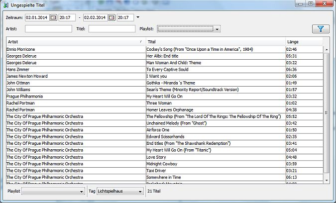

Überblick
Über den Aufruf von kannst Du Titel auflisten die nicht gespielt wurden. Das ist sozusagen das Gegenstück zu den gespielten Titeln.
Filter
Du kannst die gespielten Titel - also die, die nicht angezeigt werden - nach verschiedenen Kriterien einschränken:
Unter der Tabelle kannst Du noch eingeschr&auuml;nken welche Titel überhaupt untersucht werden sollen - und damit potentiell angezeigt werden sollen. Wenn keine Filter angegeben sind sind das alle. Du kannst die Titel wie folgt einschränken:
Änderungen im unteren Bereich werden sofort wirksam da hier nur die bereits geladenen Daten neu ausgwertet werden müssen.
Anzeige
Die Tabelle in der Mitte zeigt die Liste der Titel an die den Filterkriterien unten entsprechen und nicht in der Liste der Titel enthalten die im oben angegeben Zeitraum gespielt wurden und den weiteren Kriterien oben entsprechen.